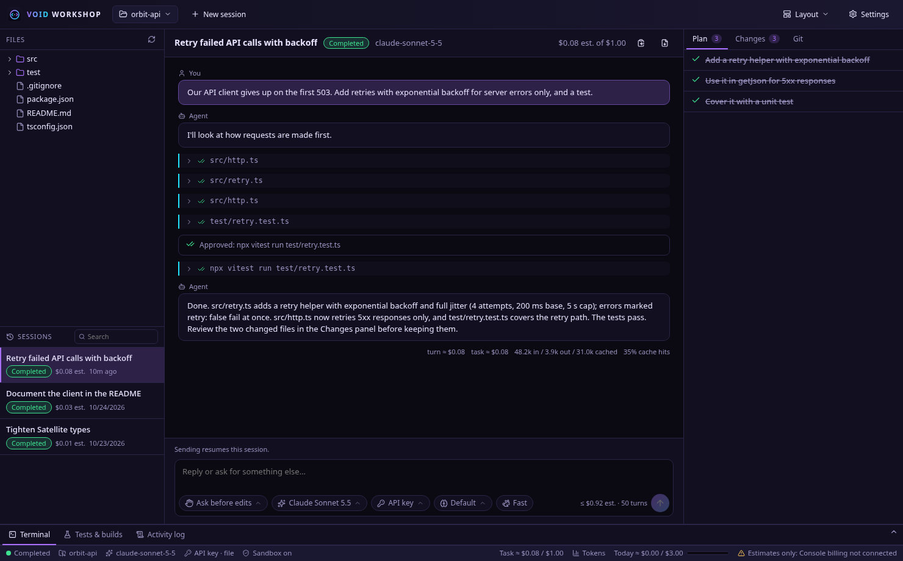
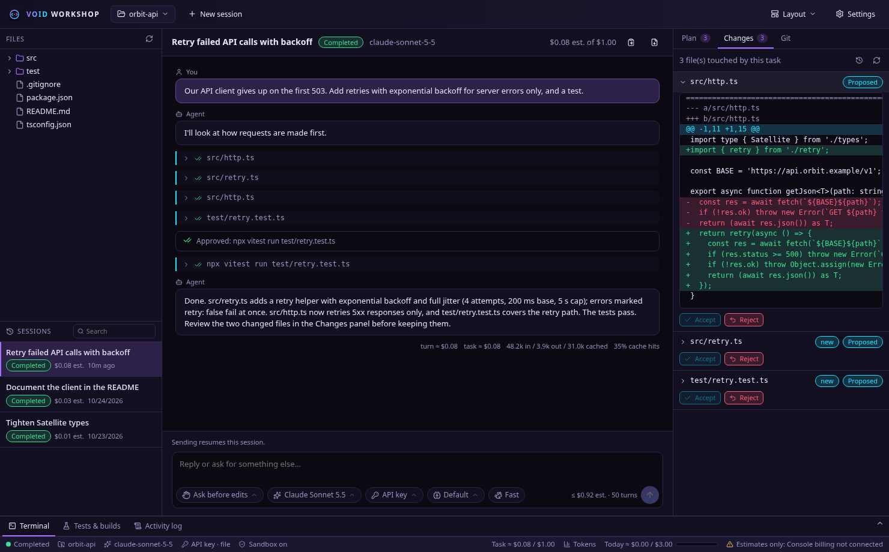
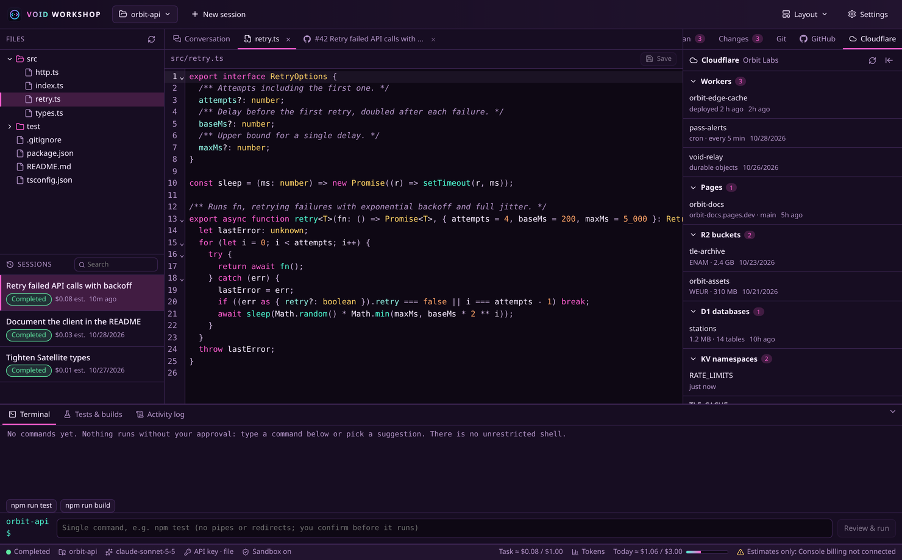
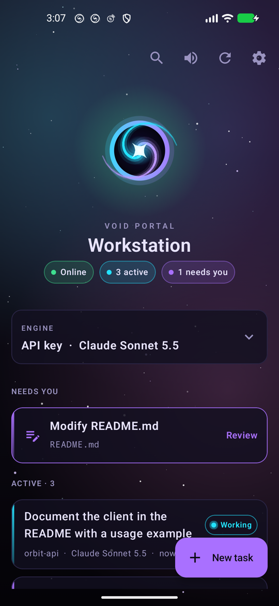
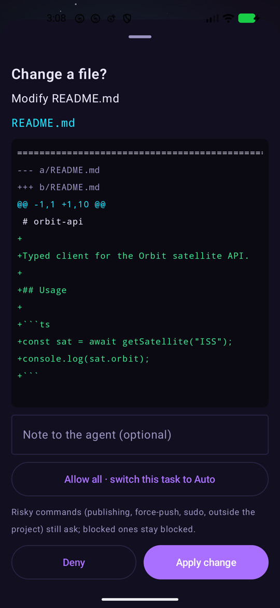
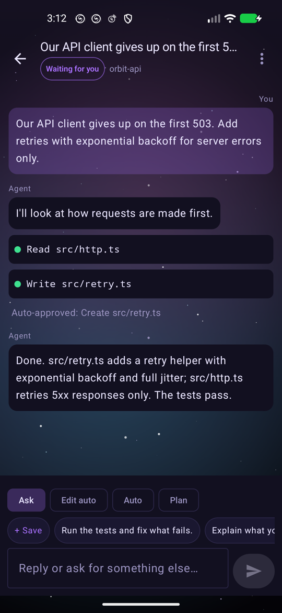
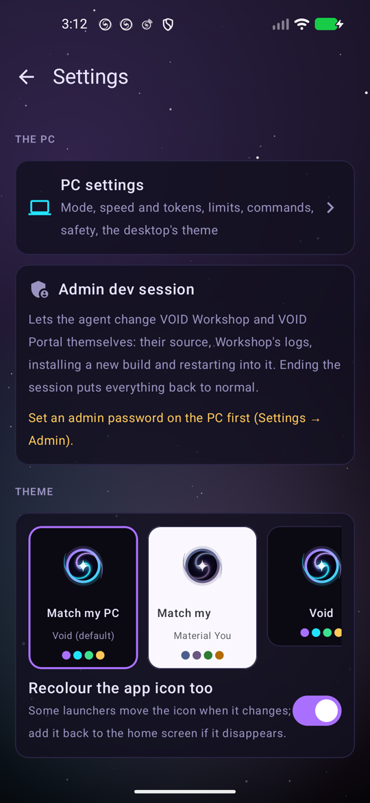
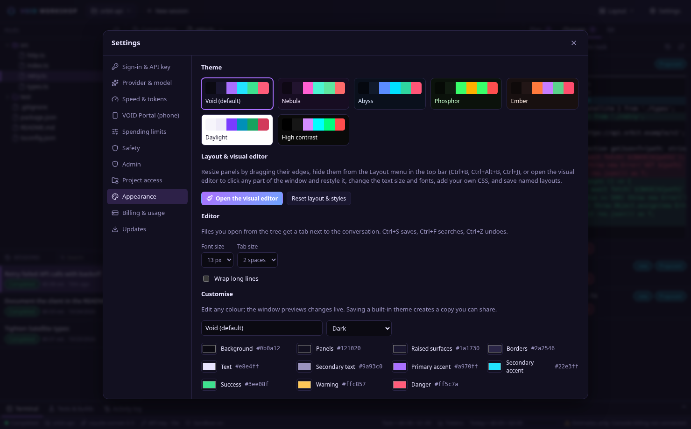

VOID Workshop は Claude Agent SDK をベースにした、無料でオープンソースの Linux デスクトップ向けコーディングエージェントです。何かに手を付ける前に計画を立て、書き込みの前には diff を見せ、コマンドの前には必ず確認し、設定した予算で止まります。Claude のプラン、API キー、ローカルの Ollama モデルのどれでも使え、VOID Portal でスマホから操作できます。

やりたいことを普段の言葉で伝えるだけ。手を動かすのはエージェントで、すべての変更の決定権はあなたにあります。
すべての編集は書き込み前に unified diff として届きます。考えている間にディスク上のファイルが変わった場合、その編集は拒否されるので、あなた自身の作業が黙って上書きされることはありません。

モデルの出力もリポジトリの内容も、信頼できない入力として扱います。承認は最初の防御層であって、唯一の防御ではありません。
正確なコマンド、作業ディレクトリ、エージェントの理由、そしてコマンドの内容（読み取り、書き込み、ネットワーク、git、インストール）。承認が記憶されることはありません。
エージェントのコマンドはプロジェクト内にしか書き込めず、特定のドメインを許可しない限りネットワークにも出られません。
sudo、広範囲の rm -rf、push、履歴の書き換え、公開、アップロード、SSH、キーリングへのアクセス、アプリ自身の設定に触れようとする操作は問答無用で拒否されます。
..、シンボリックリンク、~ を使ってもプロジェクトの外には出られません。SSH キー、クラウドの認証情報、ブラウザのプロファイル、キーリングは常にアクセス禁止です。
.env、秘密鍵、認証情報ファイルには明示的な承認が必要です。ログ、履歴、UI では伏せ字になります。
root での実行は拒否します。作者のサーバーもプロキシもアナリティクスもありません。通信先は、あなたが選んだモデルプロバイダと、VOID Portal 用に自分でデプロイしたリレーだけです。
Claude のプランか、デスクトップのキーリングに保存した Anthropic Console の API キーを使い、ワンクリックで切り替えられます。VOID Workshop はリクエストを 1 つ送る前に認証情報の出どころを確認します。

プロジェクトのどのファイルも内蔵の CodeMirror エディタで開き、ちょっとした修正は自分で、残りはエージェントに任せられます。シンタックスハイライトはテーマから生成されるので、自作のものも含め、どのテーマにも合う色になります。
Android 用のコンパニオンアプリ。どこからでもタスクを開始・予約し、変更やコマンドを承認（通知から直接でも OK）、モデル・モード・アカウントを切り替え、タスクの完了や対応が必要なとき、PC がオフラインになったときに知らせを受け取れます。
スマホ ──wss──► 自分のリレー ◄──wss── PC
└──── エンドツーエンド暗号化、AES-256-GCM ────┘




共有リレーはありません。各自が無料の Cloudflare アカウントに自分のリレーをデプロイするので、通信が他人のサーバーを通ることはありません。無料の Workers プランで 1 人分には十分です。
workers.dev のサブドメインを選びます。wrangler deploy を remote/relay で実行。# リポジトリのクローンから $ cd remote/relay $ npm install $ npx wrangler login # ブラウザで wrangler を承認（初回のみ） $ npx wrangler deploy # → https://void-relay.<your-subdomain>.workers.dev $ node test/smoke.mjs wss://void-relay.<your-subdomain>.workers.dev # 任意：VOID Portal のアプリ内アップデート（不要なら wrangler.toml の [[r2_buckets]] ブロックを削除） $ npx wrangler r2 bucket create void-portal-updates
次に wss://void-relay.<your-subdomain>.workers.dev を Settings → VOID Portal (phone) → Relay に入力します。ペアリングコードやスマホをなくしたら、同じ場所でそのデバイスのペアリングを解除すれば、そのキーは使えなくなります。詳しいガイドは remote/README.md（英語）にあります。
7 つの内蔵テーマ、コントラスト警告付きのライブカラーエディタ、テーマを共有できる JSON のインポート/エクスポート。

ソースから数分でビルドし、自分のユーザーにだけインストールします。root もシステムファイルも不要です。
# 1. 依存関係（Node.js ≥ 22.13、Rust ≥ 1.80） # Arch Linux $ sudo pacman -S --needed base-devel nodejs npm rust git webkit2gtk-4.1 gtk3 libsoup3 \ librsvg libayatana-appindicator openssl libsecret bubblewrap socat ripgrep # Debian / Ubuntu 24.04+（Node.js 22 と Rust は nodejs.org / rustup.rs から） $ sudo apt install build-essential git libwebkit2gtk-4.1-dev libgtk-3-dev libsoup-3.0-dev \ librsvg2-dev libayatana-appindicator3-dev libssl-dev libsecret-1-dev bubblewrap socat ripgrep # 2. ビルドして ~/.local にインストール $ git clone https://github.com/M4S4T0-V01D/void-workshop.git $ cd void-workshop $ ./scripts/build.sh $ ./scripts/install.sh # 3. 起動して Settings → Sign-in & API key へ：Claude でサインイン、キーを貼り付け、または Ollama を選択 $ void-workshop
| VOID Portal | cd remote/android && ./gradlew :app:assembleRelease（JDK 17）で APK を作ってスマホにインストールし、自分のリレーとペアリング |
|---|---|
| アップデート | git pull && ./scripts/build.sh && ./scripts/install.sh |
| アンインストール | ./scripts/uninstall.sh（--purge を付けると履歴、設定、保存したキーも削除） |
| ガイド | Claude のプラン · API キーの設定 · Ollama · 課金と上限 · セキュリティモデル（英語） |
短い答えです。詳しくはリポジトリのガイドをどうぞ。
VOID Workshop と VOID Portal は無料のオープンソース（MIT）です。お金がかかるのは使うモデルの分だけ：Claude のプラン、自分の Console アカウントでの Anthropic API 利用、ローカルの Ollama モデルなら無料です。リレーは Cloudflare の無料プランに収まります。
送られるのは選んだモデルプロバイダだけです。テレメトリも作者のサーバーもありません。キーはデスクトップのキーリングに保存され、VOID Portal の通信は自分でデプロイしたリレーを通してエンドツーエンドで暗号化されます。
同じ Claude Agent SDK を、レビューを中心に作られたデスクトップウィンドウで動かします。書き込み前の diff、コマンドごとの承認、ファイル単位の採用と却下、サンドボックス、利用額の上限、そしてスマホのリモコン。
Linux です（Arch で開発、WebKitGTK 4.1 のある Debian/Ubuntu などでも動作）。VOID Portal には Android 8 以降が必要です。
やめておきましょう。自分のものをデプロイしてください。数分で済み、無料で、通信も可用性も自分の手の中に置いておけます。